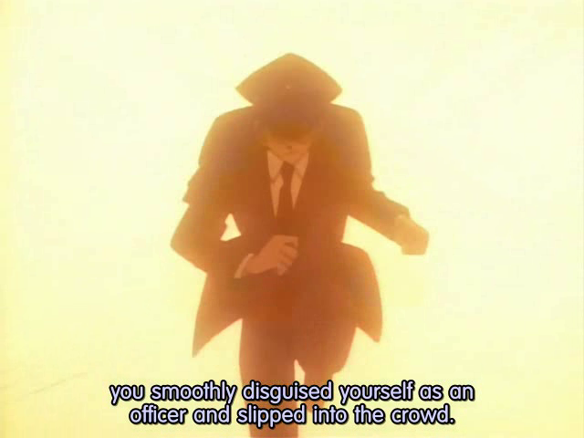

Kaito Kid appearance
Kid has dark brown hair (black in Magic Kaito 1412) with fringe that ends just above his eyes, but the
rest of his hair is normally covered by a white top hat with a blue ribbon band. When dressed in his
normal outfit, his right eye is covered by a white monocle that has a dangling green charm with a white
clover imprinted on it. Kid's outfit consists of a white suit jacket on top of a blue shirt with a red tie
and white dress slacks. The white Hang Glider Cape is attached to the jacket at Kid's shoulders. Kid wears
blue socks with white Oxford style shoes with white soles. In his original appearances Kid wore white
loafer type shoes.
Kid has been seen wearing black shirts and pants along with a black hat to help cover his face, usually
when doing information gathering for heists or when he has his "audience" at his heists looking elsewhere.
Apart from these two outfits, Kid is a master of disguise and has been seen disguising as several people
throughout the course of Detective Conan and Magic Kaito.
Kaitou Kid has used many disguises over the course of the series. These are the known ones used so far.
Kaitou Kid disguised as Ran to snatch the Suzuki family's Black Star Pearl

Conan reveals Kaitou Kid changed into a police officer outfit during their first
encounter on the roof.
Dressed up as a busboy, Kaitou Kid takes Ran's dress and duplicates it right
before the showdown between him and Conan on the ship
I'm single, twenty-seven years old, and my name is Yoichi Sensui
Kaitou Kid borrows Jirokichi's motorbike and face for a getaway
As a creepy old treasure hunting woman
TV crew can get close to the scene of a crime
Kid helps solve a murder as Wataru Takagi.
Disguising as his rival, Ginzo Nakamori
Kid proves he can even disguise as a child
Disguising as one of Nakamori's officers to escape
As a heavy man to hide lots of forged goods under his clothes
Kaito scopes out the location of his next heist as a maid, with his assistant
Konosuke Jii in disguise as an old woman
Kid unfortunately mistook Masumi Sera to be a boy
Kid finding out about the world strongest safe.
Makoto and Conan were able to see through Kid's Sonoko disguise, making Kaito
"lose" his bet to Sonoko.
Kid disguising as Professor Agasa, but discovered because of his carelessness when
putting band-aid.
Kid disguising as Kazuha Toyama.
In Movie 3, Kid disguised as Shiratori.
The first time Kid disguised himself as Shinichi to save Conan's true identity
from Ran in Movie 3.
Kid uses Shinichi's identity a second time in Movie 8 to get closer to The Jewel
of Destiny.
Kid changes his Shinichi disguise to a guard disguise after leaving the play in
Movie 8 to attempt to deceive Conan.
Kid used Isao Shinjo identity to confirm if the jewel was real or not in Movie
8.
Kid uses a paramedic disguise to check on Ran after she lands a plane in Movie
8.
Kid disguising as Saguru Hakuba temporarily joined the teenage detective ranks in
Movie 10.
Kid sneaks aboard the giant blimp disguised as one of the crew in Movie 14.
Kid then changes disguises later in Movie 14 as one of their waiters.
Kid disguising as Saguru for a brief time in order to distract Nakamori and his
assistants, so he can escape along with the Bronze Statue
Kid disguising as Shinichi in Movie 19.
Kid disguising as Shinichi in Movie 23.
.jpg) Kogoro not smoking tipped Conan off that the sleeping detective had been
replaced
Kogoro not smoking tipped Conan off that the sleeping detective had been
replaced
 Kid, as Shiho, escapes from the train in danger using his hangglider.
Kid, as Shiho, escapes from the train in danger using his hangglider.
 Kid's third time using Shinichi's identity; saving himself from Ran when she was
about to turn him in to the inspector and to board the police helicopter with Conan in Movie 14
Kid's third time using Shinichi's identity; saving himself from Ran when she was
about to turn him in to the inspector and to board the police helicopter with Conan in Movie 14